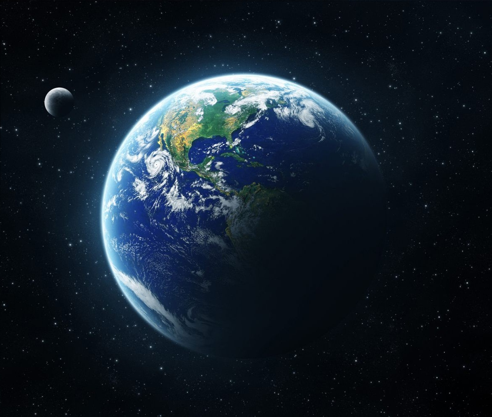
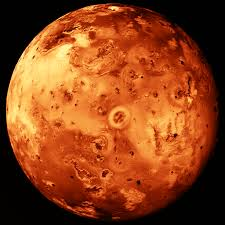
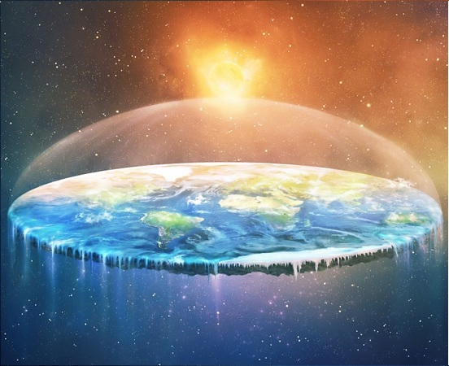
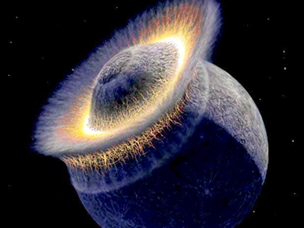
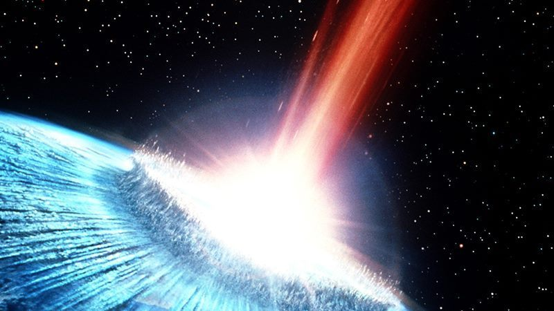

A Terra
A terra esta assim atualmente, Com seu azul do mar,Branco das nuvens e verde do solo,Más a terra nem sempre foi assim..., A terra ja passou por varias mudanças,Mudanças que fizeram a terra ser oque é hoje, A bilhões de anos a terra era bem diferente seria praticamente impossivel saber que ela ficaria neste estado, Habitando uma vida, Devido aos seus climas, E pela superfice da terra que mudou durante todos esses anos.
|

|
|

|
Lua de Lo
A Terra primitiva, há cerca de 4 bilhões de anos, tinha uma dinâmica interna muito diferente da atual e pode ter se parecido com uma das quatro grandes luas de Júpiter, chamada Io, que tem intensa atividade vulcânica. Essa é a conclusão de um estudo feito por cientistas americanos e publicado na revista "Nature".
Cientistas criaram um modelo computacional e simulações numéricas para entender como o nosso planeta pode ter tido uma única placa com vários tubos vulcânicos por onde o calor e materiais circulavam entre o núcleo e a superfície.
Esses "tubos de calor" seriam semelhantes aos que ocorrem em Io e podem ajudar a compreender como a Terra evoluiu antes da formação das placas tectônicas.
|
Terra Plana
O modelo da Terra plana é uma concepção arcaica do formato da Terra como um plano ou disco.
Muitas culturas antigas concordavam sobre a cosmografia plana da Terra, incluindo a Grécia antiga
(até o período clássico), as civilizações da Idade do Bronze e da Idade do Ferro do Oriente Médio
(até o período helenístico), na Índia (até o período Gupta), primeiros séculos d.C.),
e na China até o século XVII (17). Esse paradigma também era tipicamente mantido nas culturas
indígenas da América e a noção de uma Terra plana, abobadada pelo firmamento em forma de uma tigela invertida, era comum em sociedades anteriores às leis científicas, e.g. a da gravitação universal.[1]
|

|
|

|
Planeta Theia
Theia é o nome dado ao planeta que, de acordo com a Hipótese do grande impacto, colidiu com a Terra, dando assim origem à Lua. Segundo esta hipótese, Theia formou-se por acreção planetária dentro da mesma órbita da Terra, mas a aproximadamente 150 milhões de quilómetros (1 UA), no ponto lagrangiano L4. Theia permaneceu fixa nesta posição em harmonia com a Terra durante cerca de 20 a 30 milhões de anos. No entanto, à medida que o planeta crescia, as suas forças gravitacionais impeliam Theia para fora de L4.
|
Colisão do Asteroide
Uma escuridão de dois anos de duração teria sido o efeito das cinzas geradas pelos gigantescos incêndios após a queda de um asteroide na Terra, há 66 milhões de anos, que exterminou os dinossauros, segundo um estudo liderado pelo Centro Nacional de Pesquisa do Clima dos Estados Unidos, com apoio da Nasa e da Universidade do Colorado em Boulder....
Esta colisão foi oque extinguiu os dinossauros, E oque permitiu aos mamiferos sobreviverem, Sem riscos de extinção por baixa no numero de predadores
|

|